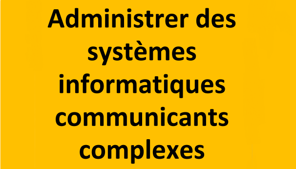

- Compétences critiques :
- Identifier les différents compesants (matériels et logiciels) d'un service numérique
- Utiliser les fonctionnalités base d'un système multitâches / multiutilisateurs
- Installer et configurer un système d'exploitation et des outils de développement
- Configuer un poste de travail dans un réseau d'entreprise
-
Evaluations :
-
Ressources / SAE: TODO TODO TODO TODO Coefficient TODO TODO TODO TODO
-
Présentation de la SAE :
-
S1.03 Installation d'un poste pour le développement
-
En partant d'un besoin exprimé par un client, il faut identifier les outils les plus adaptés aux besoins, les installer, les configurer er créer une notice d'utilisation. Cette SAE permet d'expérimenter les missions d'installation de poste de travail.
-
Niveau horaire Total : 24h Heures de formations (dont TP) 9h Heures de "projet tutoré" (dont TP) 15h
- R1.03 Intro. archi.
- Apprentissages critiques de la ressource:
- Compétence 3 : Installer et configurer un poste de travail
-
- AC1 : Identifier les différents compodants d'un système numérique
-
Descriptif détaillé de la ressource
L'objectif de cette ressource est d'apprendre les techniques de création de documents numériques sur le web en réponse au besoin client. Les savoirs de référence suivants devront être étudiés:
- Spécifications d'interfaces utilisateu, maquettage (sketch, scénarios, persona...)
- Les technologies d'affichage du Web (ex: HTML, CSS...)
- Tester la conformité des sites Web aux standards d'accésibilité W3C / WAI (World Wide Web Consortium / Web Accesibility Initiative)
Cette ressource est une concrétisation de la compétence 1 avec le support de la compétence 5. En effet, l'apprentissage des interfaces web est une base pour réaliser un développement d'application tout en appréhendant les besoins du client et de l'utilisateur.
- R1.04 Intro. archi.
- Apprentissages critiques de la ressource:
- Compétence 3 : Installer et configurer un poste de travail
-
- AC2 : Utiliser les fonctionnalités de base d'un système
- AC3 : Installer et configurer un système d'exploitation et des outils de développement
-
Descriptif détaillé de la ressource
L'objectif de la ressource est de comprendre le rôle, les composnats et le fonctionnement d'un système d'exploitation. Les savoirs de référence suivants devront être étudiés :
- Caractéristiques et types de systèmes d'exploitations
- Language de commandes de base, introduction à la programmation des scripts
- Gestion des processus (création, destruction, suivi, etc)
- Gestion des fichiers (types, droits, etc)
- Gestion des utilisateurs (Caractéristiques, création, supression, etc)
- Principe de l'installation et de la configuration d'un système : notion de noyau, de pilotes, de fichier de configuration, boot système,...
Cette ressource permettra de découvrir les principe d'un système d'exploitation, leur mode de fonctionnement et les différents types existants. Elle contribuera à comprendre comment installer un système sur une machine et à le personaliser en développant des fonctions simples facilitant la configuration et le paramétrage.
- R1.10 Anglais technique
- Apprentissages critiques de la ressource:
- Compétence 3 : Installer et configurer un poste de travail
-
- AC1 : Identifier les différentes composants d'un système numérique
-
Descriptif détaillé de la ressource
L'objectif de la ressource est d'introduire l'anglais informatique et de développer sa culture générale et scientifique. Les savoirs de référence suivants devront êtres étudiés:
- Décrire en anglais les éléments liés aux applications (interface utilisateurs, base de données, messages d'erreur...)
- Savoir maîtriser les techniques de présentation orale 1
- Rendre compte à l'écrit et à l'oral de façon informelle
- Utiliser la terminologie adéquate, les structure grammaticales adaptées et les outils de la phonologie
- Trouver, consulter et comprendredes ressources en Anglais (documentation, tutoriels,...)
Cette ressource permet l'acquisition du vocubulaire de base de l'informatique technique qui est utilisé trés largement dans toute la discipline, en particulier dans les domaines les plus techniques.
- R1.11 Base de la communication
- Apprentissages critiques de la ressource:
- Compétence 3 : Installer et configurer un poste de travail
-
- AC 4: Configurer un poste de travail dans un réseau d'entreprise
-
Descriptif détaillé de la ressource
L'objectif de cette ressource est d'aborder les fondamentaux de la communication. Les savoirs de références suivants devront être étudiés:
- Communicataion verbale et non verbale
- Recherche documentaire, appropriation, réutilisation de l'information, prise de notes, analyse critique de ressources
- Développement d'un attitude critique
- Receuil des besoins (méthode de collecte, d'enquête, d'interview)
- Conception de documents de communications (sous divers formats numériques)
Cette ressource permet une approche sur l'importance de bien communiquer face à un client, de formuler ses questions de manière claire et pertinente pour recueillir les besoins du client. La ressource permet de développer l'esprit critique et la capacité d'analyse necessaire à la collecte d'informations. Enfin, la ressource permet la mise en place de l'appropriation d'outils de communication pour restituer les informations (sous formes diverses du papier au web) à destination du client ou d'une équipe.